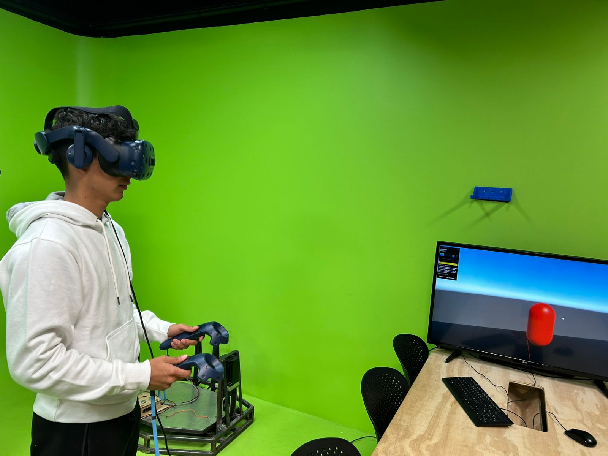

La experiencia está impulsada por software que genera el entorno digital, ya sea un juego, una simulación o una aplicación de aprendizaje. Este software se adapta a los movimientos de tu cuerpo y cabeza, creando la ilusión de que estás dentro de ese mundo.
Además de los movimientos de la cabeza, algunos sistemas también rastrean los movimientos del cuerpo completo, lo que permite que te muevas físicamente en el espacio y esos movimientos se reflejen en el entorno virtual.
Visor (vr headset)
Sensores de movimiento
Controladores
Este dispositivo es lo más importante. Tiene pantallas frente a tus ojos que muestran un entorno digital. Estas pantallas se dividen en dos, una para cada ojo, lo que crea la sensación de profundidad, como si estuvieras viendo un mundo en 3D.
El visor está equipado con sensores que siguen los movimientos de tu cabeza (cuando la giras o inclinas). De esa forma, lo que ves cambia en tiempo real, dándote la impresión de que estás mirando alrededor del entorno virtual.
Muchos sistemas de realidad virtual también incluyen controladores manuales, como joysticks o guantes especiales. Estos controladores te permiten interactuar con el mundo virtual, por ejemplo, agarrar objetos o disparar en un videojuego.
